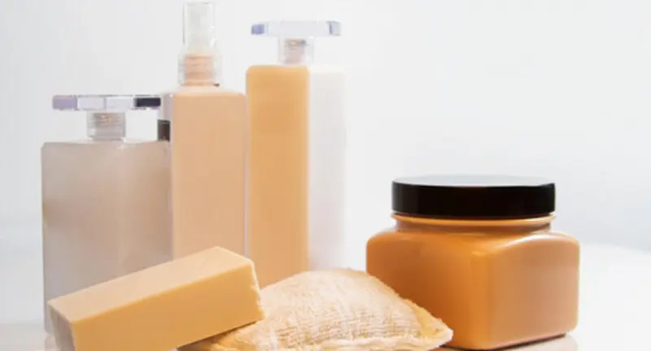
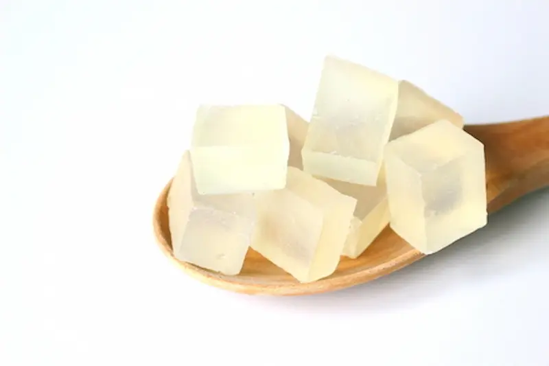
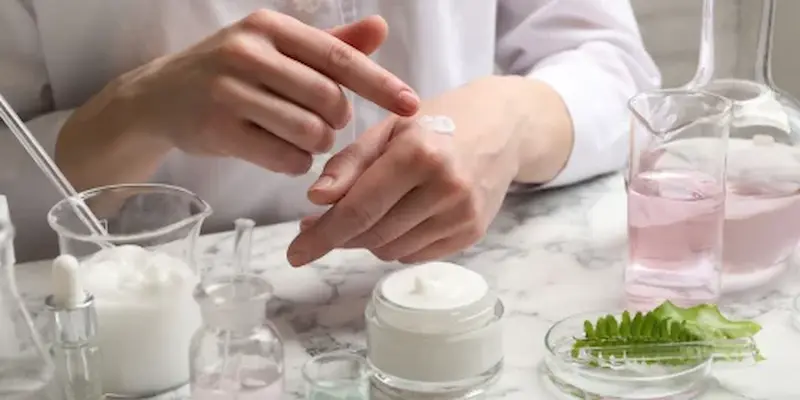

Glicerina pentru față este unul dintre cele mai eficiente și sigure ingrediente hidratante din cosmetice.
Ajută pielea să rețină apa, menține confortul și întărește bariera cutanată.
În acest material vei afla ce este glicerina, cum acționează asupra pielii, cui i se potrivește, cum se folosesc corect produsele cu glicerină și cu ce ingrediente se combină cel mai bine.
Tip de piele: toate • Nivel de risc: foarte scăzut • Compatibilitate: universală
Vezi serviciileCe este glicerina?

Agent hidratant fiziologic, compatibil cu bariera pieliiGlicerina este un ingredient hidratant (humectant) care atrage apa din mediul înconjurător și o reține în straturile superioare ale pielii. Este prezentă natural în piele și contribuie la elasticitate și catifelare.
În cosmetologie se folosește glicerina vegetală, bine tolerată de piele și potrivită chiar și pentru îngrijirea pielii sensibile.

Cum acționează asupra pielii?
Cele mai bune produse cu glicerină pentru hidratarea pielii
Recenzie independentă. Conținut nesponsorizat.
*Acest material este o recenzie editorială independentă și nu
este sponsorizat de producătorul sau distribuitorul produsului.
*Toate mărcile comerciale, numele de brand și denumirile de
produse aparțin deținătorilor de drepturi și sunt utilizate
exclusiv în scop informativ și editorial.
*Informațiile prezentate exprimă opinia autorului și nu
constituie o recomandare oficială din partea producătorului.
*Linkurile sunt incluse în scop informativ. În cazul unui
parteneriat de afiliere, aici poate fi plasat un link direct
către produs.

Cum se utilizează corect?
Glicerina funcționează cel mai bine în produse cosmetice gata formulate — seruri, creme, loțiuni și măști.
Pentru cine este potrivită?

Cu ce ingrediente se combină?
Întrebări frecvente despre glicerină
Poate fi folosită zilnic?
Da, glicerina este potrivită pentru utilizare zilnică și nu provoacă dependență.
Este potrivită pentru pielea grasă?
Da, glicerina este necomedogenică și hidratează fără a încărca pielea.
Este necesară aplicarea unei creme după?
Da, este recomandat să aplici o cremă pentru a menține umiditatea în piele.
Poate fi folosită vara?
Da, este ideală vara, mai ales în combinație cu texturi ușoare și protecție solară.
De la ce vârstă se poate folosi?
Poate fi utilizată la orice vârstă, atunci când pielea are nevoie de hidratare suplimentară.
Împărtășește experiența ta
Părerea ta îi ajută pe alții să înțeleagă dacă acest ingredient li se potrivește. Chiar și 1–2 fraze sunt utile
Nu știți ce să scrieți? Selectați opțiunile — textul se va genera automat
Publicăm doar recenzii reale. Reclama și linkurile nu trec de moderare
Prin trimiterea comentariului, sunteți de acord cu Politica de confidențialitate.